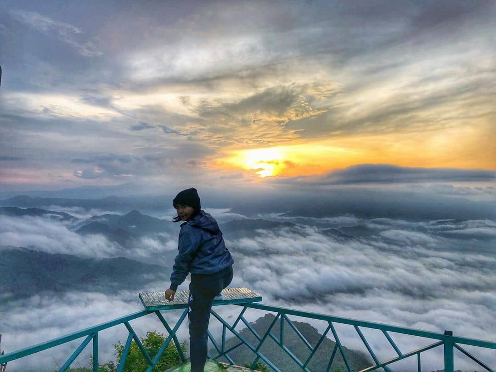
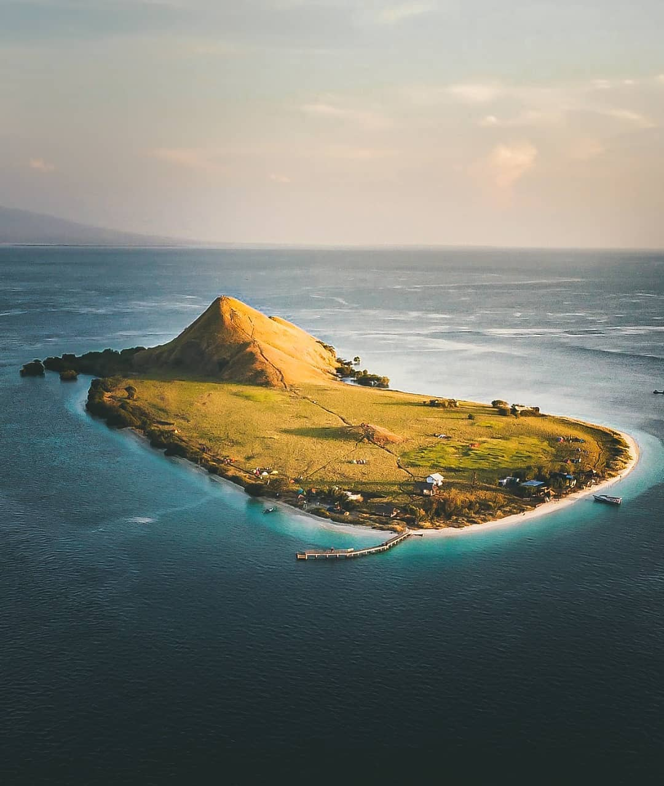
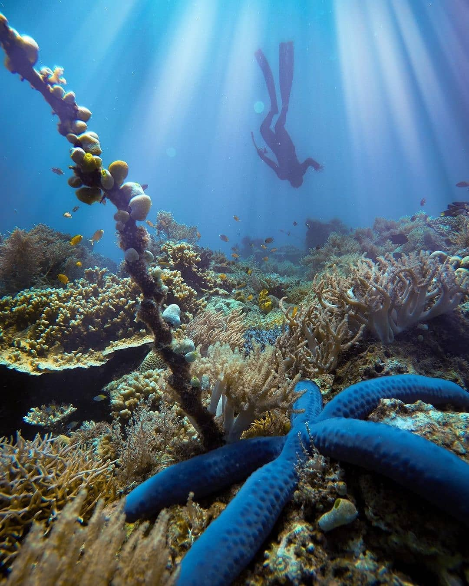
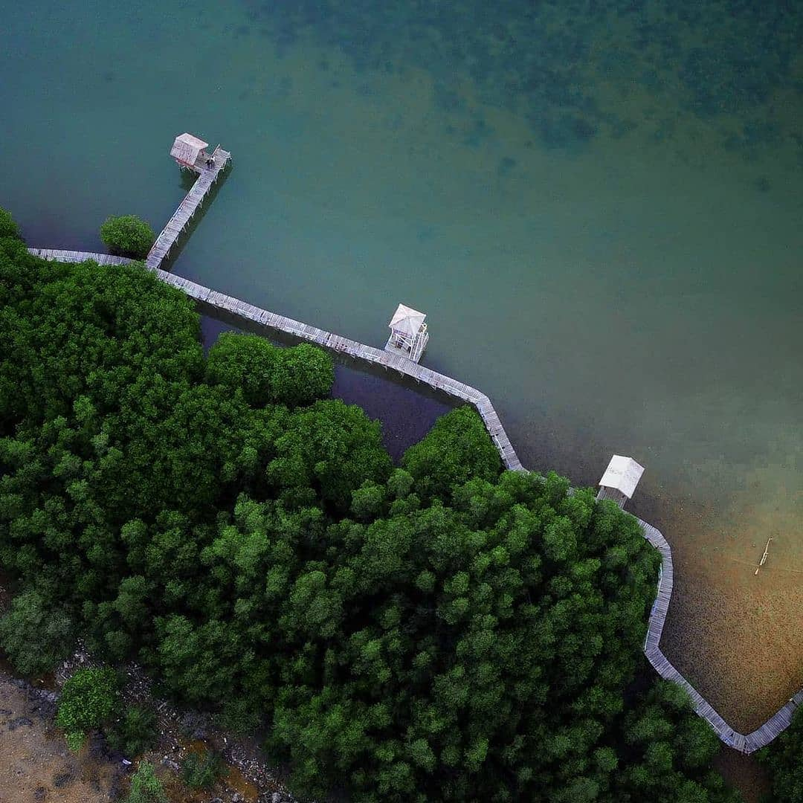
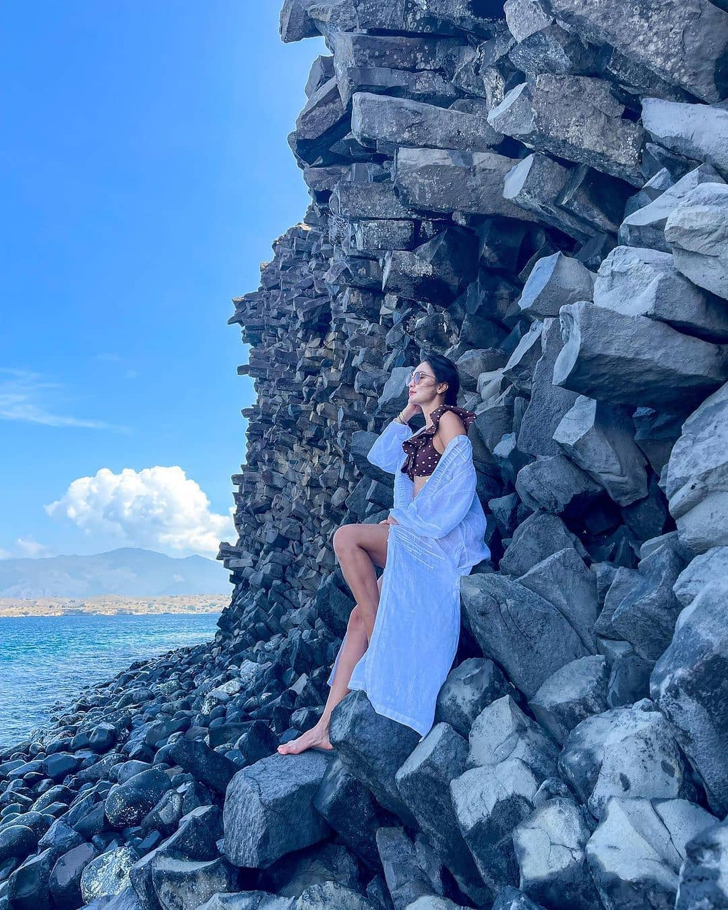

Gallery
Berikut beberapa wisata alam bak surga dunia yang wajib dikunjungi di Nusa Tenggara Barat

Negeri diatas awan "Mantar"

Kenawa Island

Air terjun, Lokasi Desa Rarak Ronges, Sumbawa Barat

Pantai Sonumbe, Lokasi So Numbe-Bima-NTB

Hutan Mangrove Lariti, Lokasi Bima-NTb

Tanjung Meriam Bima